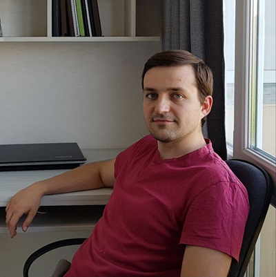

Екстрим у серці: вітер, хвилі, лід та засніжені вершини
Віталій Кат
Свобода на двох колесах: швидкість, баланс, адреналін
Мотоцикл – це не лише про швидкість, а й про баланс, координацію та концентрацію.
Їзда на мотоциклі покращує реакцію, зміцнює м’язи рук і спини, а також тренує витривалість.
До того ж, це чудовий спосіб відволіктися від рутини та відчути єднання з дорогою.
Педалі до пригод: сила, витривалість і свіже повітря
Велосипед – ідеальний засіб для тренування серця, легенів і м’язів.
Він покращує кровообіг, зміцнює ноги та спину, а також знижує стрес.
Велопрогулянки – це можливість насолоджуватися природою та відкривати нові місця.
Лови вітер – керуй хвилями: енергія стихії у твоїх руках
Кайтсерфінг – спорт для справжніх любителів екстриму. Він розвиває силу, витривалість, рівновагу та координацію.
Катання на воді з кайтом – це не тільки весело, а й корисно для всього тіла, адже працюють майже всі групи м’язів.
А ще це чудовий спосіб отримати дозу адреналіну і свободи!
Лід під ногами: грація, швидкість і свобода
Катання на ковзанах – це не лише зимова розвага, а й чудовий спосіб зміцнити м’язи, покращити координацію та отримати заряд енергії.
Воно поєднує в собі грацію фігурного катання, швидкість хокейних маневрів і відчуття легкості ковзання по льоду.
Цей вид активності розвиває витривалість, тренує серце та допомагає тримати тіло в тонусі, а ще дарує незабутні емоції та драйв!
Cписок переваг активного способу життя:
- Покращує фізичну форму – зміцнює м’язи та підвищує витривалість.
- Корисний для серця – знижує ризик серцево-судинних захворювань.
- Підвищує енергію – дає заряд бадьорості та покращує самопочуття.
- Зміцнює імунітет – допомагає організму боротися з хворобами.
- Зменшує стрес – фізична активність покращує настрій і знімає напругу.
- Сприяє здоровому сну – допомагає засинати швидше і спати краще.
- Розвиває витривалість і баланс – покращує координацію рухів.
- Допомагає контролювати вагу – сприяє спалюванню калорій.
- Збільшує концентрацію – покращує пам’ять і роботу мозку.
- Дарує яскраві емоції – приносить задоволення та мотивацію.
Активний спосіб життя – це не лише фізична користь, а й натхнення, нові емоції та яскраві враження. Я насолоджуюся кожним моментом у дорозі, на воді, в горах чи на льду!